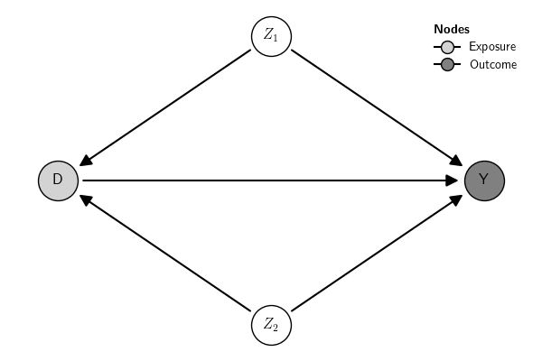

Estimation
Overview
The function <submodule>.estimate(<args>) can be used in all
submodules to run the estimation and collect inference statistics
(p-value, z-scores, etc.). For instance, to estimate a DiD model,
use:
<args> vary across submodules depending on the method used. See
Methods.
The content of the object created by estimate() is method-specific,
but it contains the same key properties across methods. These properties
provide information about the estimation procedure, including the fit
statistics, the statistical model (e.g., logit, linear model,
non-parametric difference in averages, etc.) used to compute the
parameter(s), the estimated parameters, standard errors, and
additional options used by the statistical model. The way the
information is stored in the properties of the estimate() object is
standardized across causal models.
Example
Let us use a Graphical Causal Model (GCM) combined with a Structural
Causal Model (SCM) to illustrate the estimate() object. The example
below uses a built-in GCM example with simulated data (see
Examples and Simulate Data for
details). The example below estimates the SCM using a Linear Structural
Equation Model (LSEM) created from the SCM (see
SCM for more details).

Here is the data:
shape: (1_000, 4)
┌───────────────────────────────┐
│ Z1 Z2 D Y │
│ f64 f64 f64 f64 │
╞═══════════════════════════════╡
│ 1.62 -0.15 2.03 -1.47 │
│ -0.61 -2.43 -0.03 0.43 │
│ -0.53 0.51 0.97 0.95 │
│ … … … … │
│ -0.07 -0.92 1.25 1.65 │
│ 0.35 0.65 -0.13 0.19 │
│ -0.19 1.39 0.76 -1.12 │
└───────────────────────────────┘
To estimate the model use:
It produces an estimate object:
The main pieces of information that can be directly extracted from the
estimate() object are:
shape: (16, 9)
┌────────────────────────────────────────────────────────────────────────────────────────────────────────────┐
│ term label estimate sig se lo hi statistic pvalue │
│ str str f64 str f64 f64 f64 f64 f64 │
╞════════════════════════════════════════════════════════════════════════════════════════════════════════════╡
│ Y ~ 1 beta_0Y -0.27 *** 0.03 -0.34 -0.20 -7.84 0.00 │
│ Y ~ D beta_D.Y -0.36 *** 0.03 -0.43 -0.30 -11.32 0.00 │
│ Y ~ Z2 beta_Z2.Y -0.22 *** 0.04 -0.29 -0.14 -5.78 0.00 │
│ Y ~ Z1 beta_Z1.Y -0.89 *** 0.04 -0.97 -0.81 -22.40 0.00 │
│ D ~ 1 beta_0D 0.42 *** 0.03 0.35 0.48 13.27 0.00 │
│ D ~ Z2 beta_Z2.D -0.68 *** 0.03 -0.74 -0.62 -22.50 0.00 │
│ D ~ Z1 beta_Z1.D 0.73 *** 0.03 0.66 0.79 22.75 0.00 │
│ Y ~~ Y 1.00 *** 0.04 0.91 1.09 22.36 0.00 │
│ D ~~ D 0.98 *** 0.04 0.89 1.06 22.36 0.00 │
│ Z2 ~~ Z2 1.06 0.00 1.06 1.06 null null │
│ Z2 ~~ Z1 0.02 0.00 0.02 0.02 null null │
│ Z1 ~~ Z1 0.96 0.00 0.96 0.96 null null │
│ Z2 ~ 1 0.03 0.00 0.03 0.03 null null │
│ Z1 ~ 1 0.04 0.00 0.04 0.04 null null │
│ Direct_effect := (beta_D.Y) Direct_effect -0.36 *** 0.03 -0.43 -0.30 -11.32 0.00 │
│ Total_effect := Direct_effect Total_effect -0.36 *** 0.03 -0.43 -0.30 -11.32 0.00 │
└────────────────────────────────────────────────────────────────────────────────────────────────────────────┘
{'type': 'classic', 'description': 'Standard errors: classic'}
{'Model': '(footnote)', 'Outcome_type': '(footnote)', 'Estimator': 'ML', 'Std_Error': 'classic', 'N_obs': 1000, 'RMSE': 0.0, 'AIC': 5670.735569404551, 'BIC': 5714.90536691539, 'R2': None, 'R2_adj': None, 'DF_resid': None, 'DF_model': 0}
{'npar': 9.0, 'fmin': 0.0, 'chisq': 0.0, 'df': 0.0, 'pvalue': nan, 'baseline.chisq': 1572.0227488782, 'baseline.df': 5.0, 'baseline.pvalue': 0.0, 'cfi': 1.0, 'tli': 1.0, 'nnfi': 1.0, 'rfi': 1.0, 'nfi': 1.0, 'pnfi': 0.0, 'ifi': 1.0, 'rni': 1.0, 'logl': -2826.3677847022755, 'unrestricted.logl': -2826.3677847022755, 'aic': 5670.735569404551, 'bic': 5714.90536691539, 'ntotal': 1000.0, 'bic2': 5686.320864466223, 'rmsea': 0.0, 'rmsea.ci.lower': 0.0, 'rmsea.ci.upper': 0.0, 'rmsea.ci.level': 0.9, 'rmsea.pvalue': nan, 'rmsea.close.h0': 0.05, 'rmsea.notclose.pvalue': nan, 'rmsea.notclose.h0': 0.08, 'rmr': 3.220437661179089e-17, 'rmr_nomean': 3.8104732280068437e-17, 'srmr': 1.6799586839162653e-17, 'srmr_bentler': 1.6799586839162653e-17, 'srmr_bentler_nomean': 1.987753921271931e-17, 'crmr': 1.987753921271931e-17, 'crmr_nomean': 2.5661792778148927e-17, 'srmr_mplus': 3.067134389273865e-17, 'srmr_mplus_nomean': 3.62908235048654e-17, 'cn_05': nan, 'cn_01': nan, 'gfi': 1.0, 'agfi': 1.0, 'pgfi': 0.0, 'mfi': 1.0, 'ecvi': 0.018}
{'model.type': 'sem', 'mimic': 'lavaan', 'meanstructure': True, 'int.ov.free': True, 'int.lv.free': False, 'marker.int.zero': False, 'conditional.x': False, 'fixed.x': True, 'orthogonal': False, 'orthogonal.x': False, 'orthogonal.y': False, 'std.lv': False, 'correlation': False, 'effect.coding': '', 'ceq.simple': False, 'parameterization': 'delta', 'auto.fix.first': True, 'auto.fix.single': True, 'auto.var': True, 'auto.cov.lv.x': True, 'auto.cov.y': True, 'auto.th': True, 'auto.delta': True, 'auto.efa': True, 'rotation': 'geomin', 'rotation.se': 'bordered', 'rotation.args': {'orthogonal': False, 'row.weights': 'none', 'std.ov': True, 'geomin.epsilon': 0.001, 'orthomax.gamma': 1.0, 'cf.gamma': 0.0, 'oblimin.gamma': 0.0, 'promax.kappa': 4.0, 'target': [], 'target.mask': [], 'rstarts': 30, 'algorithm': 'gpa', 'reflect': True, 'order.lv.by': 'index', 'gpa.tol': 1e-05, 'tol': 1e-08, 'warn': False, 'verbose': False, 'jac.init.rot': True, 'max.iter': 10000}, 'std.ov': False, 'missing': 'listwise', 'sampling.weights.normalization': 'total', 'samplestats': True, 'sample.cov.rescale': True, 'sample.cov.robust': False, 'sample.icov': True, 'ridge': False, 'ridge.constant': 'default', 'group.label': None, 'group.equal': [], 'group.partial': [], 'group.w.free': False, 'level.label': None, 'estimator': 'ML', 'estimator.orig': 'ML', 'estimator.args': [], 'likelihood': 'normal', 'link': 'default', 'representation': 'LISREL', 'do.fit': True, 'bounds': 'none', 'rstarts': 0, 'se': 'standard', 'test': 'standard', 'information': ['expected', 'expected'], 'h1.information': ['structured', 'structured'], 'observed.information': ['hessian', 'hessian'], 'information.meat': 'first.order', 'h1.information.meat': 'structured', 'omega.information': 'expected', 'omega.h1.information': 'unstructured', 'omega.information.meat': 'first.order', 'omega.h1.information.meat': 'unstructured', 'scaled.test': 'standard', 'ug2.old.approach': False, 'bootstrap': 1000, 'gamma.n.minus.one': False, 'gamma.unbiased': False, 'control': [], 'optim.method': 'nlminb', 'optim.attempts': 4, 'optim.force.converged': False, 'optim.gradient': 'analytic', 'optim.init_nelder_mead': False, 'optim.var.transform': 'none', 'optim.parscale': 'none', 'optim.partrace': False, 'optim.dx.tol': 0.001, 'optim.bounds': {'lower': [], 'upper': []}, 'em.iter.max': 10000, 'em.fx.tol': 1e-08, 'em.dx.tol': 0.0001, 'em.zerovar.offset': 0.0001, 'em.h1.iter.max': 500, 'em.h1.tol': 1e-05, 'em.h1.warn': True, 'optim.gn.iter.max': 200, 'optim.gn.stephalf.max': 10, 'optim.gn.tol.x': 1e-05, 'integration.ngh': 21, 'parallel': 'no', 'ncpus': 15, 'cl': None, 'iseed': None, 'zero.add': [0.5, 0.0], 'zero.keep.margins': True, 'zero.cell.warn': False, 'cat.wls.w': True, 'start': 'default', 'check.start': True, 'check.post': True, 'check.gradient': True, 'check.vcov': True, 'check.lv.names': True, 'check.lv.interaction': True, 'h1': True, 'baseline': True, 'baseline.conditional.x.free.slopes': True, 'implied': True, 'loglik': True, 'store.vcov': 'default', 'parser': 'new', 'categorical': False, '.categorical': False, '.clustered': False, '.multilevel': False}
Many functionalities to summarize and report the results are available
in the causalinf module. See Summary and
reporting and Case
studies for examples.
Additionally, the property fit of the object created by the
estimate() function contains the raw output of the underlying function
used to run the estimation. The content stored in the property fit can
be used directly for further analysis using other external software with
functionalities not provided by the causalinf module. This can be
used, for instance, for further detailed checks of statistical
assumptions (see discussion in Model assumptions). In
the example above, causalinf used the R package lavaan under the
hood to estimate the parameters: